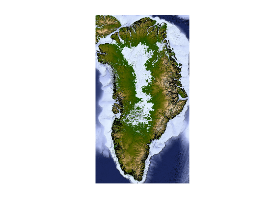
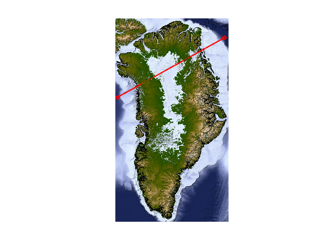
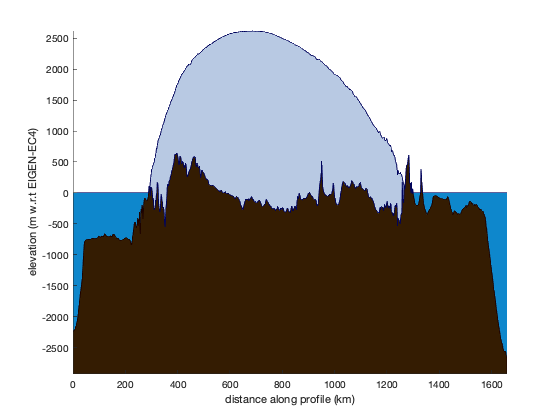
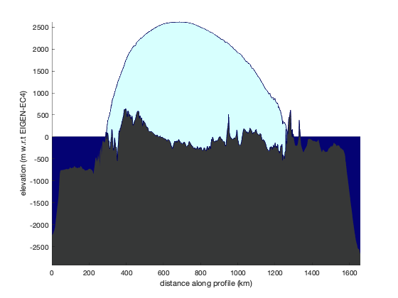
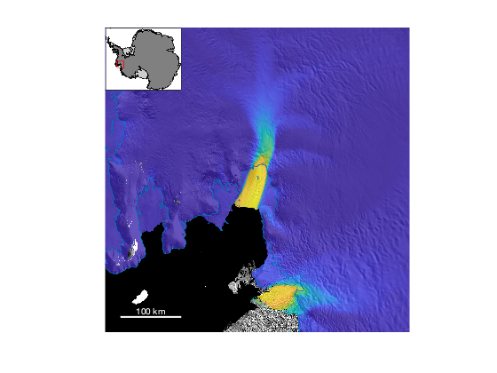
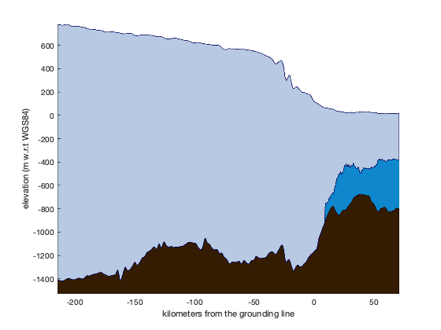
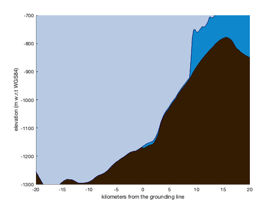
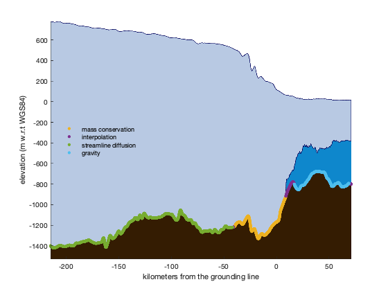

bedmachine_profile documentation
bedmachine_profile plots a 2D profile of ice, water, and rock elevations along any path in Greenland or Antarctica. The data are from Morlighem et al.'s BedMachine datasets.
See also bedmachine, bedmachine_interp and bedmachine_data.
Contents
Requirements
This function requires a set of Matlab tools and a Bedmachine dataset, and both will depend on where you're working. Get them here:
- For Greenland:
- For Antarctica:
Syntax
bedmachine_profile(lati,loni) bedmachine_profile(xi,yi) bedmachine_profile(...,IceSheet) bedmachine_profile(...,'horiz',HorizontalAxisValues) bedmachine_profile(...,PatchProperty,PatchValue) bedmachine_profile(...,'wgs84') [hice,hbed,hwater] = bedmachine_profile(...)
Description
bedmachine_profile(lati,loni) plots a side-view profile along a path given by geo coordinates lat,lon. lat and lon must be 1D arrays of equal length. If only two points are entered, an equally-spaced 1000-point line is created between those points.
bedmachine_profile(xi,yi) as above, but for polar stereographic meters xi,yi. For Greenland, xi,yi are ps70. For Antarctica, it's ps71.
bedmachine_profile(...,IceSheet) specifies the ice sheet as 'greenland' or 'antarctica' (default).
bedmachine_profile(...,'horiz',HorizontalAxisValues) specifies horizontal axis values where HorizontalAxisValues is a 1D monotonically-increasing or decreasing array of dimensions corresponding to lat and lon. By default, HorizontalAxisValues are calculated with pathdistps. If you prefer to plot profiles with respect to some other values such as latitude of a north/south transect, use bedmachine_profile(lat,lon,'horiz',lat).
bedmachine_profile(...,PatchProperty,PatchValue) specifies edge line width, face color, and edge color of ice, water, or bed. The following properties may be specified:
- 'IceFace',ColorSpec
- 'IceEdge',ColorSpec
- 'IceEdgeWidth',LineWidth
- 'WaterFace',ColorSpec
- 'WaterEdge',ColorSpec
- 'WaterEdgeWidth',LineWidth
- 'BedFace',ColorSpec
- 'BedEdge',ColorSpec
- 'BedEdgeWidth',LineWidth
- 'Sky',ColorSpec
bedmachine_profile(...,'wgs84') plots profiles relative to the WGS84 ellipsoid. (Profiles are plotted relative to the EIGEN-EC4 geoid by default.) Note: Ice surface, ice thickness, and bed elevations are plotted correctly when using the 'wgs84' tag; however, ocean surfaces always appear at zero, which could be innacurate by up to 60 meters or so.
[hice,hbed,hwater] = bedmachine_profile(...) returns handles of ice, bed, and water patch objects.
Example 1: A slice across Greenland
Consider this map of Grenland, which is described in a little more detail in the documentation for bedmachine_data.
% Load data [bed,x,y] = bedmachine_data('bed','xy','greenland'); % Plot data: sc = 0.1; % scale for resizing the grid pcolor(imresize(x,sc),imresize(y,sc),imresize(bed,sc)) shading interp axis xy image off caxis([-1 1]*2500) crameri topo greenland('k') % adds a black grounding line shadem(4,[225 60])
Now pick two arbitrary points and connect them like this:
lat = [73.4 78.8]; lon = [-65.1 -2.2]; plotpsn(lat,lon,'r-o','linewidth',2)
What's Greenland look like along that path? Finding out is this easy:
figure bedmachine_profile(lat,lon)
Perhaps you don't like those colors, so here's a different way to look at it (using my rgb function to get color names).
figure bedmachine_profile(lat,lon,'IceFace',rgb('ice blue'),... 'WaterFace',rgb('deep blue'),... 'WaterEdge','none',... 'BedFace',rgb('dark gray'),... 'BedEdge','none')
Example 2: Compare an Antarctic flowline to Bedmap2
Let's take a look at Pine Island Glacier:
figure mapzoomps('pine island glacier','nw') measuresps('speed','alpha',0.8) modismoaps antbounds gl axis off scalebarps('color','w')
Using the coord function like this:
[x0,y0] = coord;
I'm able to click on the map at some location far upstream on Pine Island Glacier. I get x0=-1591379, y0=-49232 and we'll use those coordinates as a starting place for a flowline:
[lat,lon] = flowline(-1591379,-49232); plotps(lat,lon,'r','linewidth',2)
For this profile, let's plot it as a function of kilometers from the grounding line. Calculating the distance along a profile is easy with pathdistps, but we'll have to figure out where the grounding line crosses the flow line. We could do that by loading grounding line data with antbounds_data, then getting the intersection point via pathcrossingsps71, but it's probably easier to just find the first point corresponding to floating ice along the profile.
So we'll use bedmachine_interp to get the mask, knowing that mask values of 3 correspond to floating ice.
% It's ice where the mask equals 3: iceshelf = bedmachine_interp('mask',lat,lon)==3; % The grounding line is at the first bit of ice shelf: gl = find(iceshelf,1,'first'); % Path distance in kilometers relative to grounding line: d = pathdistps(lat,lon,'km','ref',[lat(gl) lon(gl)]);
Now plot a profile
figure bedmachine_profile(lat,lon,'horiz',d,'datum','wgs84') xlabel 'kilometers from the grounding line' hold on
That's a BedMachine profile plotted relative to the WGS84 ellipsoid, along a flowline of Pine Island Glacier.
"Wait!" you may be saying. "That "0 kilometers from the grounding line label looks a bit off!" Let's zoom in:
axis([-20 20 -1300 -700])
Okay, we cool now?
Now you may be curious, where did that bed data come from in BedMachine? Well BedMachine can tell us!
source = bedmachine_interp('source',lat,lon); bed = bedmachine_interp('bed',lat,lon,'datum','wgs84'); h2 = plot(d(source==2),bed(source==2),'.','markersize',12); h3 = plot(d(source==3),bed(source==3),'.','markersize',12); h5 = plot(d(source==5),bed(source==5),'.','markersize',12); h6 = plot(d(source==6),bed(source==6),'.','markersize',12); legend([h2 h3 h5 h6],... {'mass conservation',... % source=2 'interpolation',... % source=3 'streamline diffusion',...% source=5 'gravity'},... % source=6 'location','west','AutoUpdate','off') legend boxoff axis tight
What will be most interesting is to compare this data to Bedmap2. For that we just interpolate, of course relative to WGS84, to match the BedMachine data we're compraing to:
% Get Bedmap2 data relative to wgs84: z_surf = bedmap2_interp(lat,lon,'surfw'); z_bed = bedmap2_interp(lat,lon,'bedw'); z_base = z_surf - bedmap2_interp(lat,lon,'thickness'); % Plot Bedmap2 as lines: plot(d,z_surf,'r','linewidth',1) plot(d,z_bed,'r','linewidth',1) plot(d,z_base,'m','linewidth',1)

Those are a bit off! Yeah, Bedmap2 isn't perfect. Neither is BedMachine, but slowly we make steps toward 'good enough'. Thanks to Fretwell et al. and Morlighem et all for helping us make those steps!
Citing this dataset
If you use BedMachine data, please cite the Morlighem paper listed below. And if this function is useful for you, please do me a kindness and cite my Antarctic Mapping Tools paper.
Morlighem M. et al., (2017), BedMachine v3: Complete bed topography and ocean bathymetry mapping of Greenland from multi-beam echo sounding combined with mass conservation, Geophys. Res. Lett., 44, doi:10.1002/2017GL074954.
Morlighem, M., E. Rignot, T. Binder, D. D. Blankenship, R. Drews, G. Eagles, O. Eisen, F. Ferraccioli, R. Forsberg, P. Fretwell, V. Goel, J. S. Greenbaum, H. Gudmundsson, J. Guo, V. Helm, C. Hofstede, I. Howat, A. Humbert, W. Jokat, N. B. Karlsson, W. Lee, K. Matsuoka, R. Millan, J. Mouginot, J. Paden, F. Pattyn, J. L. Roberts, S. Rosier, A. Ruppel, H. Seroussi, E. C. Smith, D. Steinhage, B. Sun, M. R. van den Broeke, T. van Ommen, M. van Wessem, and D. A. Young. 2019. Deep glacial troughs and stabilizing ridges unveiled beneath the margins of the Antarctic ice sheet, Nature Geoscience. doi:10.1016/j.cageo.2016.08.003.
Greene, C. A., Gwyther, D. E., & Blankenship, D. D. Antarctic Mapping Tools for Matlab. Computers & Geosciences. 104 (2017) pp.151-157. doi:10.1016/j.cageo.2016.08.003.
Author Info
This function and supporting documentation were written by Chad A. Greene of the University of Texas at Austin, October 2018.